<section style="padding-top: 85px;padding-bottom: 81px" class="head" *showItSizes="{min:1440}">
    <div class="container">
        
        <h2 style="margin-bottom: 18px; font-size: 36px; line-height: 54px;">
            노인장기요양보험이 없으신가요?<br>
            케어링이 전부 도와드릴게요.
        </h2>
        <button type="button" style="position: absolute"> 무료 전화 1522-6585</button>
        <p>
            <span style="font-weight: 800;">*신청 대상 :</span> 만 65세 이상 또는 65세 미만 중 노인성 질환을 가진 사람.
        </p>
    </div>
</section>

<section style="padding-top: 85px;padding-bottom: 81px; text-align: left;" class="head" *showItSizes="{min:900,max:1439}">
    <div class="container">
        
        <h3 style="margin-bottom: 18px;">
            노인장기요양보험이 없으신가요?<br>
            케어링이 전부 도와드릴게요.
        </h3>
        <button type="button" style="left: 580px; width: 300px; font-size: 22px; padding-top: 15px; padding-bottom: 15px;"> 무료 전화 1522-6585</button>
        <p style="font-size: 18px;">
            *신청 대상 : 만 65세 이상 또는 65세 미만 중 노인성 질환을 가진 사람.
        </p>
    </div>
</section>

<section style="padding-top: 47px; padding-bottom: 47px;text-align: left" class="head"
         *showItSizes="{min:600,max:899}">
    <div class="container" style="width: 60%; padding: 0;">
        
        <h4 style="margin-bottom: 18px;">
            노인장기요양보험이 없으신가요?<br>
            케어링이 전부 도와드릴게요.
        </h4>
        <button type="button" style="left: 310px; width: 200px; font-size: 18px; padding: 15px 2% 15px 2%">무료 전화 1522-6585
        </button>
        <p style="font-size: 15px;">
            *신청 대상 : 만 65세 이상 또는 65세 미만 중<br> 노인성 질환을 가진 사람.
        </p>
    </div>
</section>

<section class="head text-center" style="padding-top: 47px; padding-bottom: 25px;text-align: center"
         *showItSizes="{max:599}">
    <div class="container" style="padding: 0px; width: 100%;">
        <h3 style="font-size: 18px;font-weight: bold; margin-bottom: 18px;">
            노인장기요양보험이 없으신가요?<br>
            케어링이 전부 도와드릴게요.
        </h3>
        <button type="button" style="position: relative; left: 0; bottom: 0; width: 224px; height: auto; font-size: 16px;
        padding: 9px 0 12px 0; margin-bottom: 21px;" id="middle_free_call" onclick="location.href='tel:1522-6585'">무료 상담 전화하기</button>
        <p style="font-size: 11px; font-weight: normal;">
            *신청 대상 : 만 65세 이상 또는 65세 미만 중 노인<br>성 질환을 가진 사람.
        </p>
    </div>
</section>
